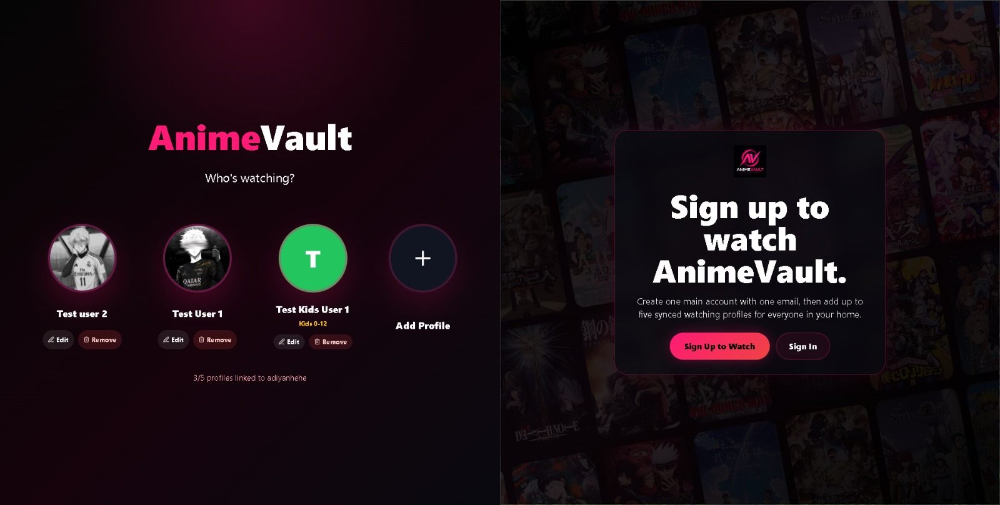
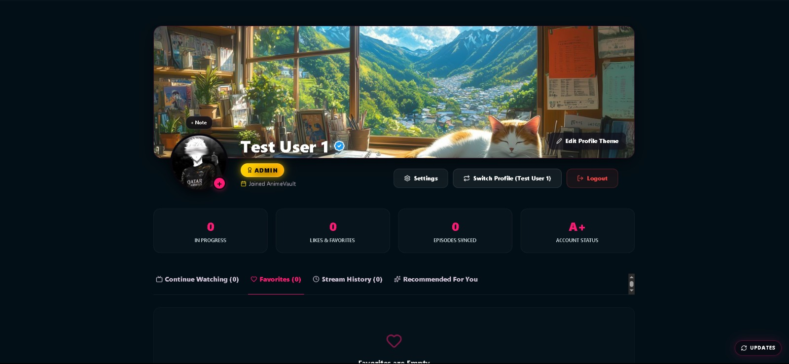
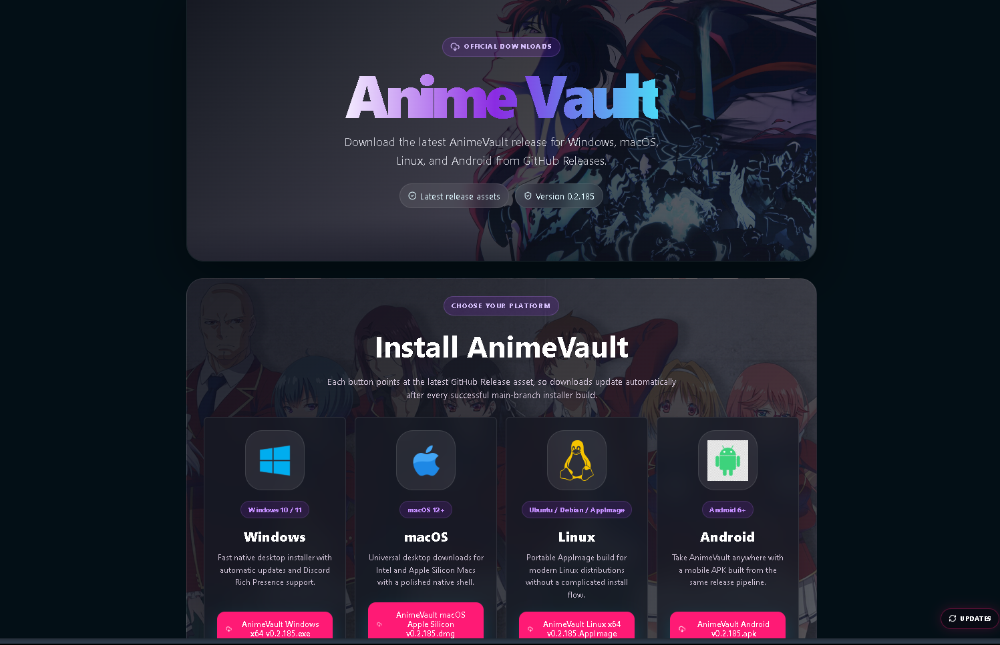

Web app
High-performance web experience
A polished frontend build focused on responsive layouts, strong visual hierarchy, and fast user flows.
Project library
Clean builds across web apps, mobile-style interfaces, gameplay systems, UI experiments, and creative prototypes.

A polished frontend build focused on responsive layouts, strong visual hierarchy, and fast user flows.

React Native-inspired screens with clean spacing, cards, and product-ready navigation patterns.
A browser experience showcasing smooth sections and practical interaction design.
A technical prototype demonstrating animation timing, input response, and gameplay feedback.
Behavior and interaction systems designed for more believable in-game worlds.
Reusable effects work focused on impact, clarity, and readable motion.

Information-dense interface with clean cards, metrics, and scalable component spacing.

A polished concept exploring color, composition, and developer-friendly structure.